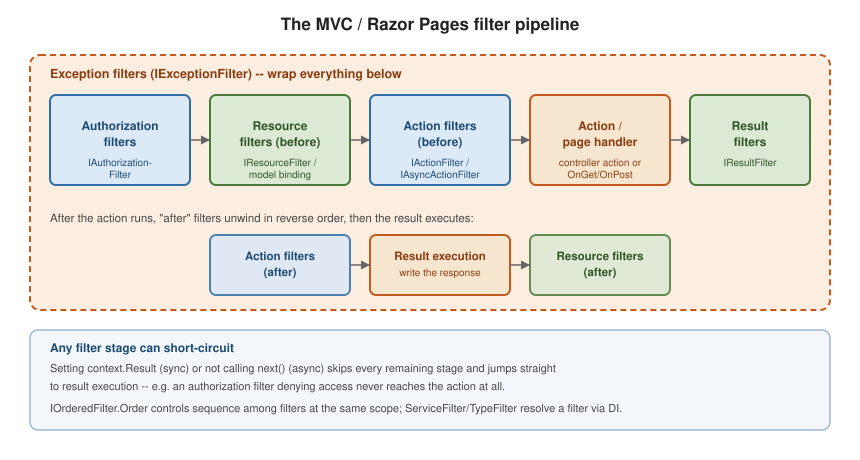

Filters and the MVC Pipeline
|
This content was generated with the assistance of AI and should be verified against the official documentation before being relied on in production. |
Filters let cross-cutting logic (logging, validation, caching, exception mapping) run at defined points around an action or page handler, without every action repeating that logic itself.
The filter pipeline
Filters run in a fixed sequence around the handler, and most kinds run both before and after it:

The filter kinds
| Filter | Runs |
|---|---|
|
First, before model binding — can short-circuit the whole request (this is how
|
|
Around model binding — the earliest point that can short-circuit and the latest point that can affect binding (e.g. output caching reading/writing a cache before binding even happens). |
|
Immediately before and after the action method itself — can inspect or replace bound arguments, or short-circuit with a result before the action runs. |
|
Only when an unhandled exception propagates out of everything inside it — the filter
analog of |
|
Immediately before and after the |
|
The Razor Pages equivalent, combining authorization/resource/action-like hooks around a page handler; see Razor Pages. |
public sealed class TimingFilter(ILogger<TimingFilter> logger) : IAsyncActionFilter
{
public async Task OnActionExecutionAsync(ActionExecutingContext context, ActionExecutionDelegate next)
{
var sw = Stopwatch.StartNew();
var executed = await next(); // runs model-bound action; executed.Result is set if it ran
logger.LogInformation("{Action} took {Ms}ms", context.ActionDescriptor.DisplayName, sw.ElapsedMilliseconds);
}
}Order and scope
A filter can be registered globally (o.Filters.Add<T>() in AddControllers/AddRazorPages), on a controller
([ServiceFilter(typeof(T))]), or on a single action — global filters run outermost, action-level filters
innermost, for filters of the same kind. IOrderedFilter sets an explicit Order among filters that would
otherwise tie, lower values running first (outer) on the way in:
public sealed class AuditFilter : IActionFilter, IOrderedFilter
{
public int Order => -100; // runs before default-ordered (Order == 0) action filters
public void OnActionExecuting(ActionExecutingContext context) { }
public void OnActionExecuted(ActionExecutedContext context) { }
}Short-circuiting
Any filter can stop the request from reaching later stages: set context.Result in a synchronous filter, or
simply not call next() in an async one. This is exactly how [Authorize] (an authorization filter) returns a
403 without ever invoking the action, and how output caching (a resource filter) can serve a cached response
without ever running model binding.
DI in filters: ServiceFilter and TypeFilter
Attributes are compile-time constants, so a filter attribute cannot take constructor-injected dependencies
directly. ServiceFilter resolves an already-DI-registered filter type; TypeFilter instantiates a type
through DI without requiring it to be separately registered:
builder.Services.AddScoped<AuditFilter>();
[ServiceFilter(typeof(AuditFilter))] // AuditFilter must be registered above
public sealed class OrdersController : Controller { }
[TypeFilter(typeof(RateLimitFilter), Arguments = new object[] { 100 })] // constructed via DI, extra ctor args allowed
public sealed class PublicApiController : ControllerBase { }A filter implementing IFilterFactory (most attribute-based filters do this implicitly through
TypeFilterAttribute) is how attributes like [ServiceFilter] bridge attribute syntax to DI-constructed
instances.
Filters vs. middleware vs. endpoint filters
| Mechanism | Scope and capabilities |
|---|---|
Every request, before routing has even selected an endpoint — no access to bound action arguments, model state, or MVC-specific context. |
|
MVC/Razor Pages filters (this page) |
Only requests routed to a controller action or page handler — has
full access to bound arguments, |
|
The Minimal API equivalent of action filters — wraps a single endpoint’s handler with access to its bound arguments, without the controller/action machinery. |
Choose middleware for concerns that apply to the whole app regardless of what handles the request (e.g. response compression); choose MVC filters or endpoint filters for concerns that need the bound arguments/action-specific context. See Comparing filters and middleware.
Deep dive: an idempotency filter for POST /orders
A client that loses the response to POST /orders will retry, and the retry must not create a second order. The
usual remedy is an Idempotency-Key request header: the first request with a given key executes and its result is
remembered, later requests with the same key replay that result. This needs to run before model binding (no need
to parse a body we will not use) and after the action (to record the outcome), which is exactly what a resource
filter provides.
using Microsoft.AspNetCore.Mvc;
using Microsoft.AspNetCore.Mvc.Filters;
using Microsoft.Extensions.Caching.Memory;
public sealed class IdempotencyFilter(IMemoryCache cache) : IAsyncResourceFilter
{
public async Task OnResourceExecutionAsync(ResourceExecutingContext context, ResourceExecutionDelegate next)
{
if (!context.HttpContext.Request.Headers.TryGetValue("Idempotency-Key", out var key) || key.Count == 0)
{
await next(); // no key: behave as if the filter were absent
return;
}
var cacheKey = $"idempotency:{key}";
if (cache.TryGetValue(cacheKey, out IActionResult? stored) && stored is not null)
{
context.Result = stored; // short-circuit: model binding and the action never run
return;
}
var executed = await next(); // run binding, action and result execution
if (executed.Exception is null && executed.Result is { } result)
{
cache.Set(cacheKey, result, TimeSpan.FromMinutes(10));
}
}
}
[ApiController]
[Route("orders")]
public sealed class OrdersController(IOrderService orders) : ControllerBase
{
[HttpPost]
[ServiceFilter<IdempotencyFilter>] // generic ServiceFilter attribute, .NET 8 and later
public async Task<IActionResult> Create(CreateOrder request, CancellationToken ct)
{
var id = await orders.CreateAsync(request, ct);
return CreatedAtAction(nameof(Get), new { id }, new { id });
}
[HttpGet("{id:int}")]
public IActionResult Get(int id) => Ok(new { id });
}
// registration
builder.Services.AddMemoryCache();
builder.Services.AddScoped<IdempotencyFilter>();Two details matter in production. First, an in-memory cache is per instance: behind a load balancer use a
distributed store and reserve the key before calling next() so two concurrent retries cannot both run. Second,
replaying a stored IActionResult replays the status and body but not necessarily every response header; storing the
status code and serialized body explicitly is more robust.
Ordering several filters
When both a global audit filter and the idempotency filter apply, the kinds fix the broad order (authorization, then
resource, then action, then result) and Order only breaks ties within a kind. An IExceptionFilter only sees
exceptions thrown by the action and the filters inside it, so an exception thrown by a resource filter itself
propagates to the exception-handling middleware instead.
Testing a filter in isolation
A filter is an ordinary class, so it can be exercised with a hand-built context and no server:
var cache = new MemoryCache(new MemoryCacheOptions());
var filter = new IdempotencyFilter(cache);
var http = new DefaultHttpContext();
http.Request.Headers["Idempotency-Key"] = "abc";
var actionContext = new ActionContext(http, new RouteData(), new ActionDescriptor());
var executing = new ResourceExecutingContext(actionContext, new List<IFilterMetadata>(), new List<IValueProviderFactory>());
cache.Set("idempotency:abc", new OkObjectResult("stored"));
await filter.OnResourceExecutionAsync(executing, () => throw new InvalidOperationException("must not run"));
Assert.IsType<OkObjectResult>(executing.Result);